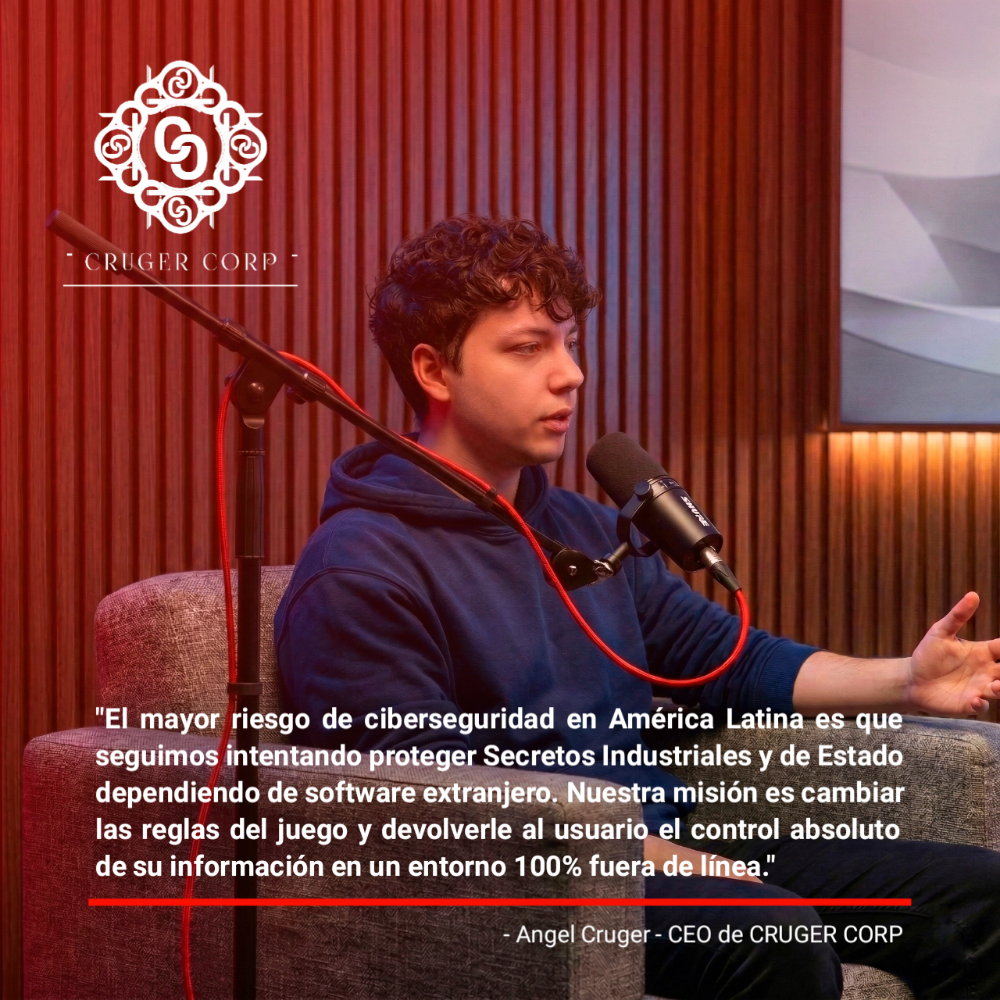
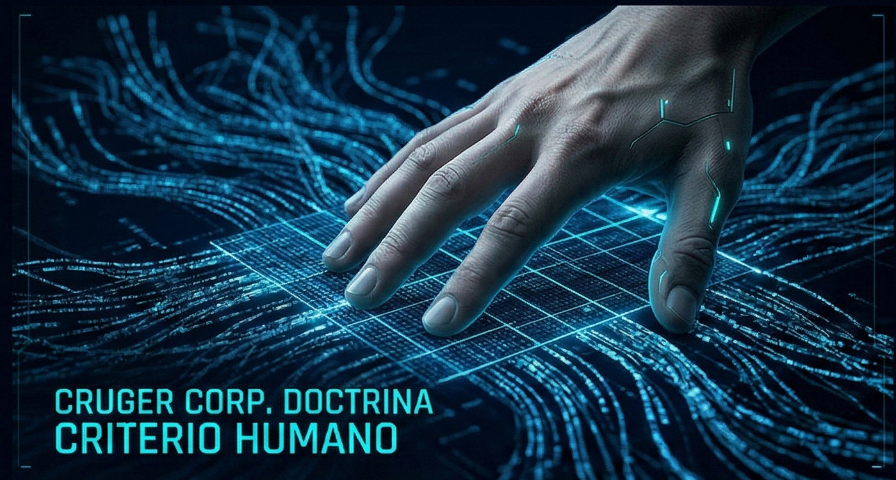
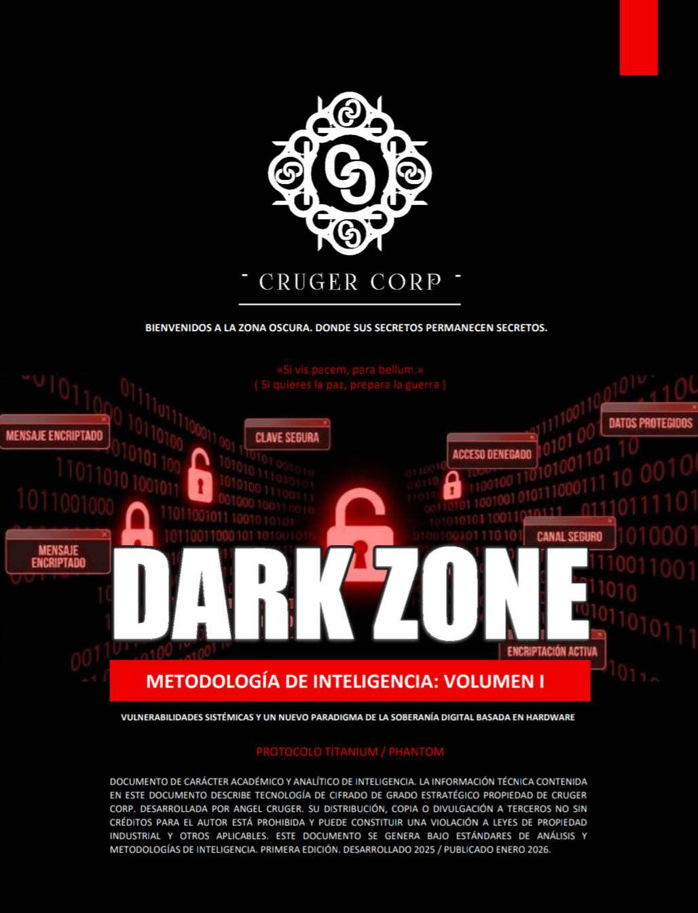

Postura Oficial: Software Dark Zone
Recientemente hemos recibido mensajes sobre las dudas del sistema de Software Dark Zone en nuestro sitio web. Cruger Corp emite la siguiente postura aclarando las capacidades de cifrado, descifrado y triturado, así como el modelo de negocio, licencias y arquitectura del protocolo TITANIUM/PHANTOM.
Declaración sobre hackeo al director del FBI
En Cruger Corp entendemos el alcance sobre el ataque que sufrió el día de hoy 27 de Marzo de 2026 Kash Patel, actual director del FBI. Aunque se ha informado que la filtración involucra el correo electrónico personal, lo cierto es que responde a una necesidad que nuestra postura ya había advertido. La información crítica debe permanecer segura y debemos reducir las brechas de ciberseguridad.
Soberanía Tecnológica y Vulnerabilidad Institucional
En respuesta al análisis estratégico de proyección 2026, Cruger Corp emite un manifiesto crucial sobre la situación de la ciberseguridad nacional y nuestra postura operativa oficial. Abordamos la brecha sistemática de desinterés institucional hacia el desarrollo tecnológico soberano, la neutralidad táctica de la firma ante terceros, y nuestra política estricta de elegibilidad de licenciamiento. Además, validamos nuestra posición geográfica y ratificamos el compromiso de continuidad operativa para nuestra cartera de clientes y socios comerciales.
Actualización del Catálogo Freeware
Se ha actualizado nuestra sección de utilidades gratuitas financiadas por el Fondo I+D de Cruger Corp. Hemos añadido las herramientas en desarrollo "Bracket System" (gestión avanzada de unidades y reconstrucción de sistemas) y "Eliminación Profunda" (sanitización de bajo nivel).

La Visión Detrás de Cruger Corp
"Mirar atrás no significa voltear al pasado, significa saber de dónde vienes, quién eres y qué esperas de tu futuro." Conozca la trayectoria técnica, el rigor académico y la filosofía de resiliencia de Angel Cruger, creador de los protocolos de defensa que dan vida a nuestra firma.

Visión América Latina y la Soberanía Digital
"El mayor riesgo de ciberseguridad en América Latina es que seguimos intentando proteger Secretos Industriales y de Estado dependiendo de software extranjero". Compartimos nuestra reciente charla donde abordamos la urgencia de migrar a infraestructuras operadas localmente.

Doctrina de Seguridad y Soberanía Digital
El mito de la transparencia absoluta y por qué el secreto industrial es el verdadero estándar de seguridad. En Cruger Corp rechazamos la dependencia de la nube y la Inteligencia Artificial no supervisada, apostando por el control físico y el modelo Air-Gap.

Metodología de Inteligencia Volumen I (OSINT)
Consulte nuestro análisis documentado bajo metodologías OSINT y la evaluación de vectores de ataque en infraestructuras críticas. Este documento forma parte de nuestro repositorio académico y está disponible para su lectura y descarga gratuita.